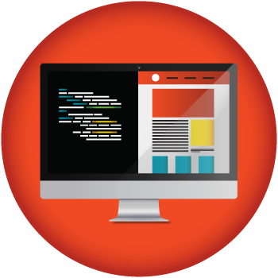
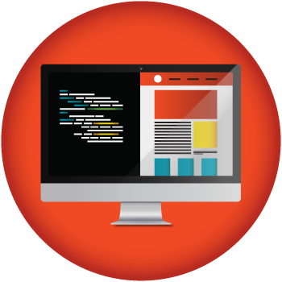

Debido a que asistía a la capacitación de Jóvenes a Programar - Plan Ceibal, y que prácticamente me gastaba 6 horas en traslados, concurrir a las clases de la Facultad me afectaba a Jóvenes a Programar
Incluso concurriendo a solo una asignatura, el tiempo no me daba para cumplir con lo que Jóvenes a Programar exigía. No podía cumplir con las tareas de inglés.
Para 2018, el objetivo es retomar la facultad, empezar con las asignaturas que se deben, y seguir como debe ser.
※ Estar atento a la plataforma para verificar las fechas de inscripcion de las asignaturas.
※ Concurrir a las actividades introductorias, para despejar las dudas que me puedan surgir, y para hacer amistades para los grupos de estudio.
※ Hacer un repaso teórico de Math I y II de 3ro FM para que el legendario Cálculo I no sea tan Cálculo I.
Traslados: $2000
Alimento: $1800
Materiales: $500
Uniforme(personal): $2500
Total: $6800 ($3800 menusales)
Capacitación. Formación. Estar a un paso más de ser Ingeniero.
Marzo 2018 (momento en que inician las clases)
Gracias a Jóvenes a Programar - Plan Ceibal, tengo la oportunidad de conseguir empleo siendo Desarrollador Web Jr.
Teniendo empleo podría generar otro ingreso a la casa y ayudar con los gastos. Podría pagar los costos que implica ir a la Facultad, y tendríamos más oportunidades de salir de viaje con mi familia.
Lamentablemente solo nos pudieron capacitar en Frontend (HTML, CSS, y JS), va a depender de mí aprender backend (sql, php), y tener práctica en los freamworks.
※ Estar atento a los avisos que se publiquen en las distintas plataformas (en CompuTrabajo, BuscoJobs, Gallito Luis, etc) para cargos de "Desarrollador Web Jr". Debo checkear diariamente todos los avisos, y apuntarme a todos los que cumpla más o menos con el perfil requerido.
※ No perder práctica, plantearse ejercicios personales y poner en práctica los conocimientos adqueridos.
※ Seguir aprendiendo. Aprender lo que no se dió en la capacitación de JaP, buscar libros, cursos, o guias para ampliar el conocimiento y la práctica. Adquerir conocimientos de Backend, freamworks, y mejorar la práctica en Ajax.
Traslados: $2000 (si está en Mtdeo)
Alimento: $2000
Uniforme: $? (Personal: $3000)
Otros: $3000
Total: $10000 ($4000 mensuales)
Remuneración, experiencia en el rubro, capacitación.
Junio 2018
Mi PC ya está quedando atras, no rinde lo suficiente para mi necesidades. Una PC más potente me ayudaría mejor en mi área, en mi hobbie, en mis necesidades, y en mis momentos de juego (obviamente).
Lamentablemente, este objetivo depende del anterior, depende de que consiga empleo, ya que debería comprar la PC con dinero ahorrado del salario
Este objetivo, al depender, puede que se aplace o se acorte el tiempo. Depende de cuánto sea el salario, los gastos que deba hacer...
※ Debo recorrer varias tiendas de eletrónica y/o de computación para ir viendo equipos e informarme de los precios. Informarme mejor sobre las capacidades de los equipos, cuáles son mejores y por qué. Y mantenerse informado sobre los precios que hay en las tiendas online (Merado Libre, OLX, Ebay, Amazon, etc)
※ Una vez de haber obtenido empleo, cuidar los gastos e ir ahorrando al menos 12K pesos todos los meses.
※ Una vez de haber llegado a 1.5K dólares, ir y comprar el equipo que más convenga.
Ahorro: $12000
Compra de PC: USD 1500
Total: USD 1500 ($12000 por mes hasta llegar a la cifra)
Mejora de herramienta. Mejor desempeño en satisfacer mis necesidades.
Cuatro meses después de conseguir empleo (puede aplazarse)
| Domingo | Lunes | Martes | Miercoles | Jueves | Viernes | Sábado | |
|---|---|---|---|---|---|---|---|
| Trabajo | 1 | 8 | 8 | 8 | 8 | 8 | 1 |
| Estudio | 3 | 4 | 4 | 4 | 4 | 4 | 3 |
| Traslados | 3 | 3 | 3 | 3 | 3 | ||
| Descanso | 1 | 1 | 1 | 1 | 1 | ||
| Dormir | 6 | 6 | 6 | 6 | 6 | 6 | 6 |
| Juego | 4 | 4 | |||||
| Social | 2 | 2 | |||||
| Distracciones | 4 | 4 | |||||
| Personal | 4 | 2 | 2 | 2 | 2 | 2 | 4 |